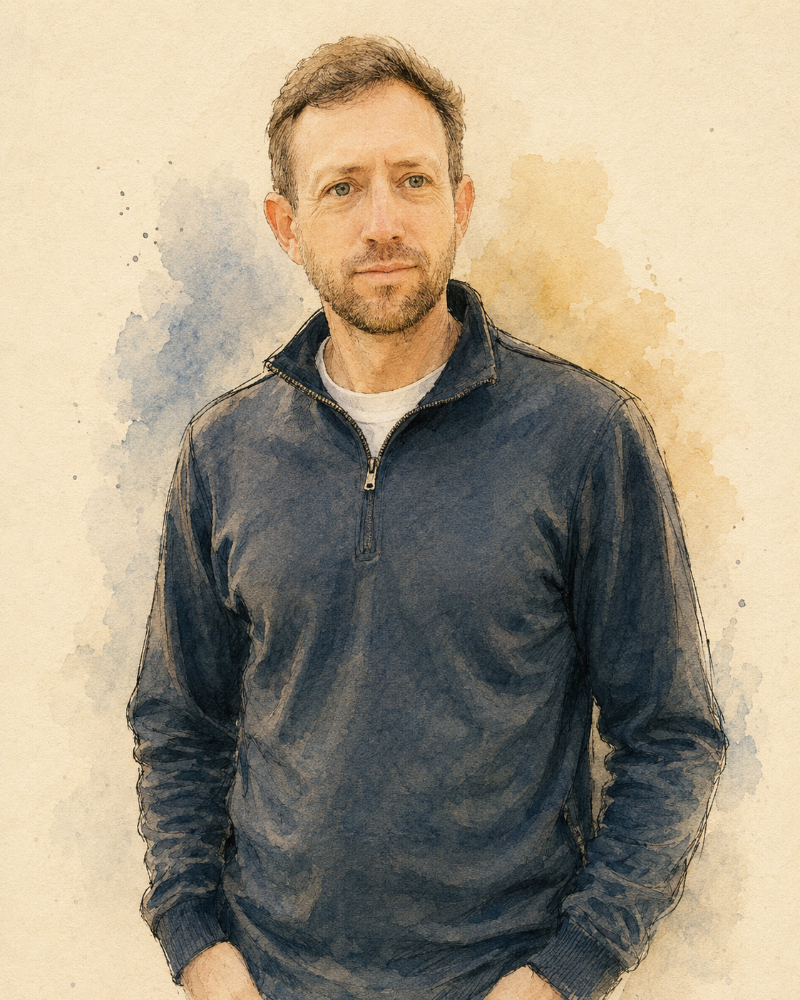

I build AI systems for the part of creative work that is still forming.
Audio model research, AI characters, prompt systems, and experimental interfaces. Built for the stage where the question is live, the shape is not obvious yet, and a working prototype can teach you something.

I am useful when the idea is real, but not clean yet.
My work sits between creative direction and technical execution. I build synthetic audio workflows, AI characters, prompt systems, interfaces, and small prototypes that help people hear, test, and shape an idea before it has a final form.
My background crosses data, product, mindfulness, and AI experimentation. I have scaled analytics teams, taught attention, shipped software, designed model behavior, made music with AI, and built systems for working with synthetic voice.
The common thread is that I like turning a live question into something concrete. Not a deck about what might work. A tool, a demo, a character, a workflow, a prototype. Something real enough to react to.
How I work
Start with the live question
Before choosing a tool, I want to understand what someone is trying to explore, make, hear, test, or understand.
Build something small
A rough prototype tells the truth faster than a perfect concept. I like making the smallest thing that can change the conversation.
Follow the weird parts
Some of the best AI work happens off the clean path: strange prompts, synthetic voices, broken inputs, character constraints, and careful listening.
What I bring into a room
Make the idea testable
I can turn a loose creative or technical question into a working structure: a prompt system, an audio workflow, a character, an interface, or a prototype.
Explain while making
I like helping people understand AI by building with it in front of them. The concepts land faster when there is a real artifact on the table.
Know what to keep
AI can produce endless material. I help separate the useful signal from the noise, especially when the interesting part is not obvious yet.